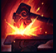
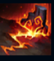
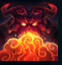
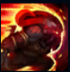
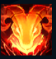

Ornn
| The Fire Below The Mountain | |
|---|---|
| Release date | 23.08.2017 |
| Class | Vanguard |
| Positions | Top |
| Resource | Mana |
| Range type | Melee |
| Adaptive type | Physical |
| Base statistics | |||
| Health | 590–2205 | Mana | 340.6–1445.6 |
| Health regen. | 9–24.3 |
Mana regen. | 8.01–18.21 |
| Armor | 33–101 | Attack damage | 69–128.5 |
| Magic resist. | 32–53.25 | Crit. damage | 175% |
| Move. speed | 335 | Attack range | 175 |
Ornn e spiritul freljordian al meșteșugăriei și fierăritului. Trudește în singurătatea unei fierării imense, săpate în cavernele de magmă de sub vulcanul Focul Făurarului. Acolo, aprinde jăratic sub cazane pline cu piatră topită, purificând metalele și creând obiecte de o măiestrie neîntrecută. Când alți zei, în special Volibear, pășesc în lumea muritorilor și se amestecă în viețile lor, Ornn revine pentru a-i împiedica, folosindu-se fie de ciocanul său credincios, fie de puterea flăcărilor ce ard în inima munților. |  |
FIERAR NEOBOSIT Ornn primește rezistență la magie și armură bonus suplimentare din toate sursele. Indiferent de poziția pe hartă, Ornn își poate folosi aurul pentru a făuri obiecte non-consumabile. În plus, poate îmbunătăți obiectele sale și ale aliaților în capodopere. |
||
|---|---|---|---|---|
 |
ERUPTIE VULCANICA Orianna îi poruncește sferei să atace un loc-țintă, provocându-le daune magice țintelor de pe traiectorie (fiecare nouă țintă suferă mai puține daune). După atac, sfera rămâne în locul indicat. |
|||
 |
RASUFLARE DE FOC Ornn avansează și suflă flăcări. Inamicii loviți de ultima rafală de flăcări devin ''casabili''. | |||
|  |
ASALT INCANDESCENT Ornn se năpustește înainte, provocându-le daune inamicilor prin care trece. Dacă se lovește de teren în timpul năpustirii, impactul creează o undă de șoc în jurul lui, care provoacă daune și aruncă în sus inamicii. | |||
 |
INVOCATIE Ornn invocă un spirit elemental masiv în locația-țintă, iar acesta începe să se îndrepte spre el cu viteză din ce în ce mai mare. Inamicii peste care trece spiritul suferă daune, sunt încetiniți și devin ''casabili''. Ornn poate reactiva abilitatea pentru a se năpusti spre spirit și a-l redirecționa în direcția în care îl lovește, făcându-l să arunce în sus toți inamicii loviți, să le provoace aceleași daune și să reaplice efectul ''casabil''. |